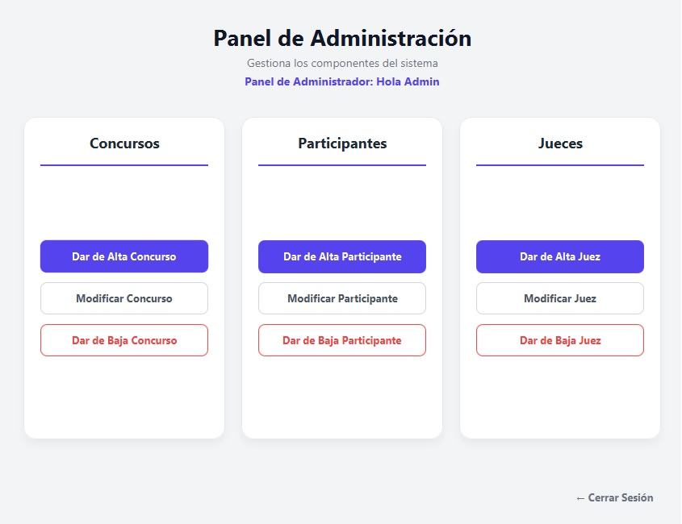
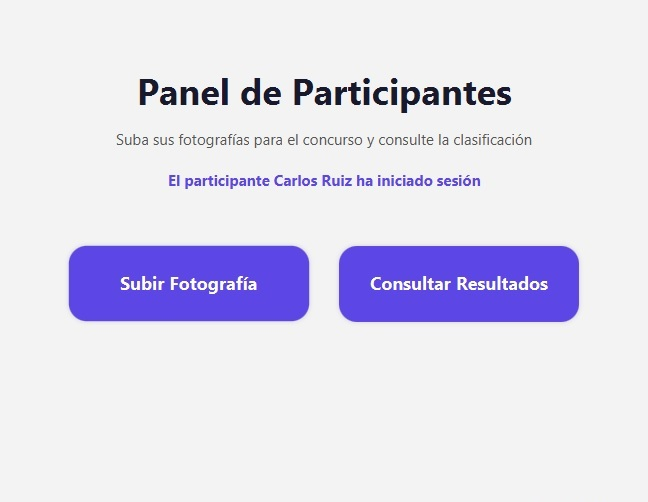
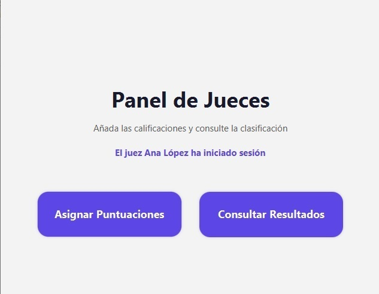

Plataforma web diseñada para gestionar concursos fotográficos mediante un sistema de roles que permite administrar concursos, participar mediante fotografías y evaluar imágenes de forma organizada y transparente.
Ver funcionamientoEsta aplicación permite gestionar de forma integral concursos de fotografía desde una única plataforma.
El sistema facilita la administración de concursos, la participación mediante la subida de imágenes y la evaluación por parte de jueces autorizados.
Cada usuario dispone de permisos específicos según su función.
El administrador crea un nuevo concurso fotográfico.
Los usuarios acceden e suben sus fotografías.
Los jueces revisan y puntúan cada imagen.
El sistema calcula automáticamente los resultados.
Creación, edición y administración completa.
Administración de participantes y jueces.
Subida y almacenamiento de imágenes.
Puntuaciones asignadas por jueces.
Ranking automático basado en puntuaciones.
Compatible con ordenador, tablet y móvil.
Roles
Procesos principales
Gestión centralizada
Disponibilidad
Imagenes de la app.


